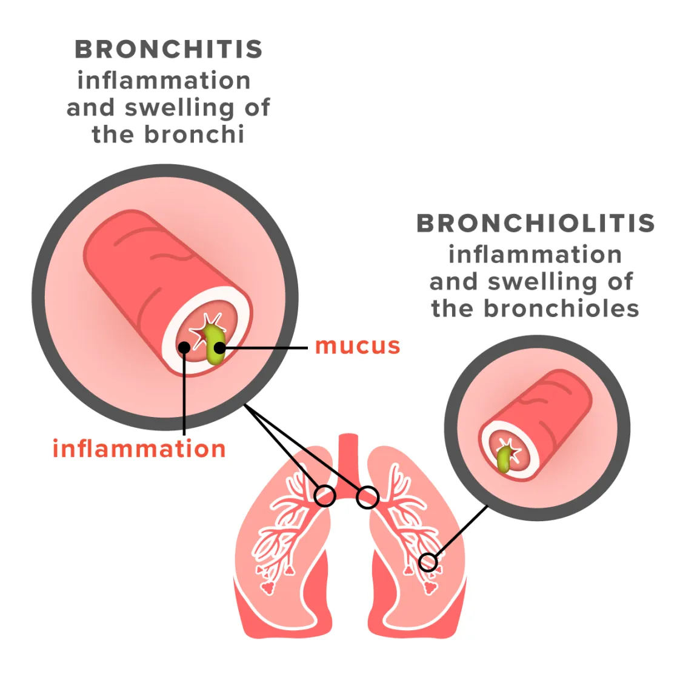

Bronchiolitis

SYMPTOMS
Symptoms may include:
- runny nose
- fever
- stuffy nose
- loss of appetite
- cough
DIAGNOSIS
There are several ways to diagnose both types of bronchiolitis:
- physical exam and medical history evaluation, including potential environmental exposures.
- imaging testing, including chest X-rays or a CT scan.
- spirometry, which measures how much and how quickly you take in air with each breath
- arterial blood gas tests measure how much oxygen and carbon dioxide are in your blood
TREATMENTS
Viral bronchiolitis requires different treatments than bronchiolitis obliterans.
- Treatments for viral bronchiolitis
- Many cases of viral bronchiolitis are mild and clear up without treatment. For more severe cases in infants, hospitalization may be necessary. A hospital can provide oxygen and intravenous fluid treatments. Antibiotic medications don’t work against viruses, but some medications can help open your baby’s airways.
- Treatments for bronchiolitis obliterans
-
- Corticosteroids can help clear the lungs of mucus, reduce inflammation, and open up the airways.
-
You may need oxygen treatments and immunosuppressant medications to regulate your immune system.
-
Breathing exercises and stress reduction can help ease breathing difficulties.
-
Sometimes, a lung transplant may be the best option in the most severe cases.
- Home care
- Recovery from both conditions requires extra rest and increased fluid intake. Keeping the air in your home clear of smoke and chemicals is very important. A humidifier to keep the air moist may also help.